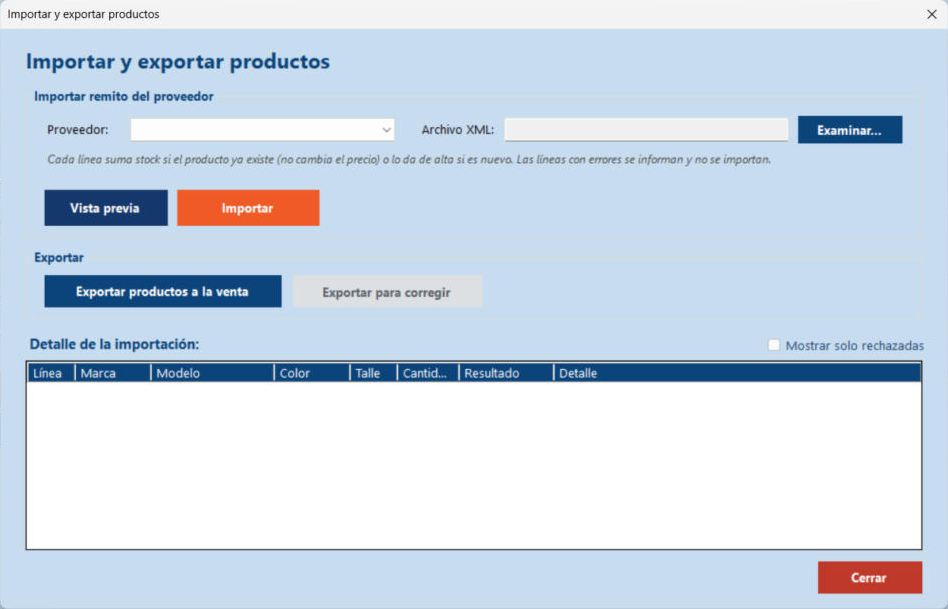

Inicio › Maestro › Importar y exportar productos (XML)
Importar y exportar productos (XML)
En vez de cargar producto por producto, podés importar el remito XML que manda el proveedor: suma stock a lo que ya existe y da de alta lo nuevo. También exporta el catálogo de productos a la venta y las líneas rechazadas para corregirlas.
Dónde está: Maestro › Procesar productos › Importar / exportarLo usa: AdministradorAtajo: F1
Pasá el mouse por encima de cualquier botón o campo de la pantalla para ver qué hace.

Qué hace cada elemento
- 1ProveedorElegí quién envía el remito. El CUIT que figura dentro del archivo tiene que coincidir con el del proveedor elegido.
- 2Archivo XMLMuestra el archivo elegido. No se escribe a mano: se completa con Examinar.
- 3ExaminarAbre el explorador para elegir el XML del remito. Solo muestra archivos .xml, de hasta 5 MB.
- 4Vista previaRevisa el archivo y te dice qué se importaría y qué no, sin cambiar nada. Conviene hacerlo siempre antes de importar.
- 5ImportarImporta de verdad: suma stock a los productos que existen, da de alta los nuevos y rechaza las líneas con errores.
- 6Exportar productos a la ventaGuarda un XML con el catálogo de todos los productos que tienen stock: marca, categoría, modelo, color, talle, precio y stock.
- 7Exportar para corregirSe activa solo después de una importación con líneas rechazadas. Guarda un XML con esas líneas para que las corrijas y vuelvas a importar.
- 8Detalle de la importaciónUna fila por línea del remito: número de línea, marca, modelo, color, talle, cantidad, resultado y detalle. Resultados posibles: Por importar (vista previa), Producto nuevo, Stock sumado, Ya importada y Rechazada.
- 9Mostrar solo rechazadasFiltra la lista para ver únicamente las líneas con error. Se habilita solo si hay rechazadas.
- 10CerrarCierra esta ventana y vuelve a Procesar productos.
Cómo hacerlo
- Elegí el Proveedor.
- Tocá Examinar... y elegí el archivo XML del remito.
- Tocá Vista previa: te muestra cuántas líneas se importarían y cuáles tienen errores. Todavía no cambia nada.
- Si está bien, tocá Importar.
- Mirá el resumen: productos nuevos, stock sumado, líneas rechazadas y ya importadas antes.
Tené en cuenta: Si el producto ya existe, la importación suma el stock pero NO cambia su precio ni su categoría.
Una línea se rechaza si tiene un dato inválido (talle, cantidad, marca inexistente...). Las demás se importan igual.
- Activá Mostrar solo rechazadas para ver qué falló y por qué.
- Tocá Exportar para corregir y guardá el archivo (propone remito_número_para_corregir.xml).
- Abrí ese XML con el Bloc de notas, corregí los valores y guardalo.
- Volvé a elegir ese archivo con Examinar e importalo. Las líneas ya importadas no se repiten.
Tené en cuenta: Cuando todas las líneas quedan importadas, el remito figura como completo y ya no se puede volver a importar.
- Tocá Exportar productos a la venta.
- Elegí dónde guardar el archivo. Propone productos_a_la_venta con la fecha.
- El XML incluye solo productos con stock, y registra fecha, usuario y cantidad.
Para saber más
Mensajes que puede mostrar el sistema 17
| Mensaje | Qué significa y qué hacer |
|---|---|
| AvisoSeleccione el proveedor del remito. | Falta elegir el proveedor. |
| AvisoSeleccione el archivo XML del remito con el botón Examinar. | Falta elegir el archivo. |
| ErrorEl archivo debe ser un .xml con contenido y no superar los 5 MB | Elegiste otro tipo de archivo, uno vacío o muy pesado. |
| ErrorEl archivo no es un XML válido (error en la línea N, posición M) | Está mal escrito (por ejemplo falta cerrar una etiqueta). Corregí en esa línea. |
| ErrorEl archivo no tiene la estructura esperada: debe ser un remito con al menos una línea item | El XML tiene que empezar con <remito> y traer al menos un <item>. |
| ErrorEl archivo contiene una declaración DTD o entidades, que no están permitidas por seguridad | Quitá esa parte del XML. Se bloquea por seguridad. |
| ErrorEl número de remito es obligatorio, admite letras, números y los signos - _ / . y hasta 30 caracteres | Corregí el atributo numero del remito. |
| ErrorEl CUIT del archivo (...) no coincide con el del proveedor elegido (...) | Elegiste el proveedor equivocado o el archivo es de otro proveedor. |
| ErrorLa numeración de las líneas (atributo linea) está incompleta, repetida o no es válida | Cada item tiene que traer un número de línea distinto. |
| ErrorEl archivo supera el máximo de 2000 líneas por remito | Dividí el remito en varios archivos. |
| ErrorEl remito ... ya fue importado completo el ... No se importó nada | Ese número de remito de ese proveedor ya se cargó. Se evita así duplicar stock. |
| ErrorEste contenido ya fue importado como remito ... No se importó nada | Es el mismo contenido que otro remito ya cargado, aunque cambie el número. También evita duplicar stock. |
| AvisoLínea rechazada: cantidad / talle / marca / precio inválidos (con el motivo exacto) | Mirá el Detalle de esa línea en la grilla. La cantidad debe ser un entero entre 1 y 10.000. |
| ListoImportación terminada. Productos nuevos: N. Stock sumado: N. Líneas rechazadas: N. Ya importadas antes: N | Resumen del resultado. |
| AvisoNo hay líneas rechazadas para exportar | No hace falta corregir nada. |
| ErrorNo se pudo guardar el archivo. Verifique la ubicación y vuelva a intentar | Elegí otra carpeta o cerrá el archivo si lo tenías abierto. |
| ErrorNo se pudo leer el archivo. Verifique que no esté abierto en otro programa | Cerralo en el otro programa y reintentá. |
Reglas a tener en cuenta 5
- Solo el Administrador puede importar y exportar.
- El remito tiene un número, el CUIT del proveedor y una lista de items. Cada item trae línea, marca, categoría, modelo, color, talle, cantidad y precio.
- Importar nunca duplica stock: el mismo remito, o el mismo contenido con otro número, se rechaza. Las líneas ya importadas se reconocen y se saltean.
- Una línea con error no frena a las demás: se informa y las buenas se importan.
- La importación, la exportación para corregir y la exportación a la venta quedan registradas en la Bitácora.
Temas relacionados
SneakRush · Ayuda del sistema · Importar y exportar productos (XML). Podés abrir esta ayuda desde cualquier pantalla con la tecla F1.